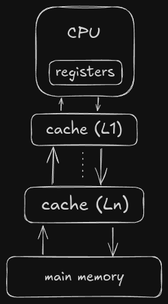

But, what is memory?
Well, in the most obvious ways memory stores data and states (states are eventually represented in some form of data). In context of computing, memory is the piece of device that is responsible for making sure that we are able to store some information, there are various factors that come into play like the amount of information we need to store, how frequently are we going to access the information, and how fast we need to get the information. The next obvious question is how is this “information” accessed? Well it happens as a part of a typical instruction-execution cycle, and it is out of scope of this write-up.
So what is this blog about?
This is a techinical dive into how a generic OS is desinged to interact with memory device mainly with the main memory. We will go through the basic hardware on which memory relies on, allocation techniques, segmentation and paging, and an example we will take a look at the ARM architecture.
The Hardware
CPU accesses data from various memory devices, however direct access to data is limited to registers and the main-memory. Data accessed through registers is the fastest and only requires a single CPU cycle without stalls to get the data, although transfering data from main memory to CPU involves buses (buses are “wires” carrying the data from memory to CPU), to reduce the time taken to get the data from memory to CPU we place another memory device commonly known as cache. CPU cannot directly access data present in disk so for any instruction all the data has to be present in the main memory.
Processes and memory
For each process to run, it needs to be loaded into the memory from disk (the executable binary), and then as CPU executes instructions it needs to periodically decode the instructions, certain instruction refer back to some space in the memory, this space is addressed as “Logical” address, this address then gets converted into “Physical” address by a special hardware device called the MMU (memory management unit). Kernel ensures that a process’s memory space is protected via different mechanism such as using special registers (limit and relocation registers).
Understanding a process’s memory footprint
Kernel bookeeps the memory usage of all the running process in the userspace, and to understand
this, we can use the pmap command. Here for example I am going to show a small example
of how we can see the memory mappings for nvim (neovim).
|
|